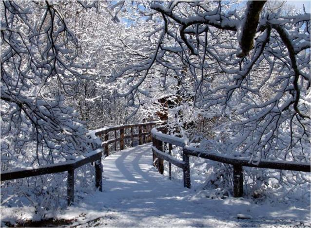

El invierno es una de las épocas más bonitas del año, para estar con la familia y pasar ratos
memorables. En estos meses si tenemso suerte podremos despertarnos con la sierra totalmente nevada, cosa que hará muy felices a los más pequeños. Te proponemos como actividad el senderismo.

Senderismo
Esta actividad es una de las más relajantes y te permite conectar con la naturaleza. En invierno hay que tener cuidado ya que debido a las heladas
los caminos se cubren de hielo y pueden resvalar, pero con un poco de cuidado podrás pasear durante horas sin darte cuenta, cautivado por la belleza del bosque.